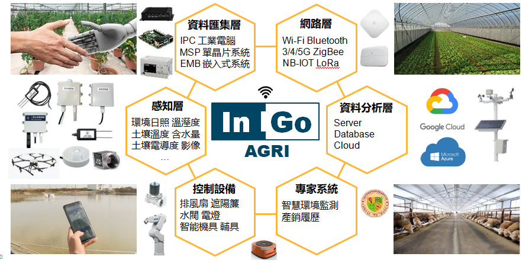
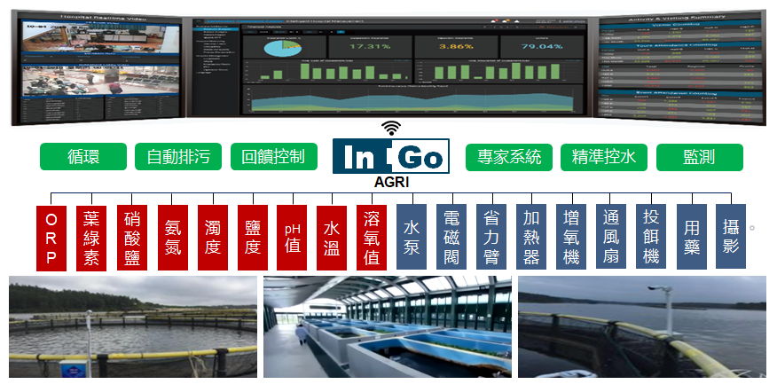
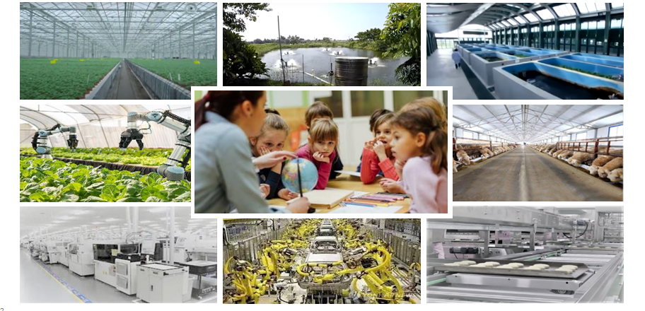
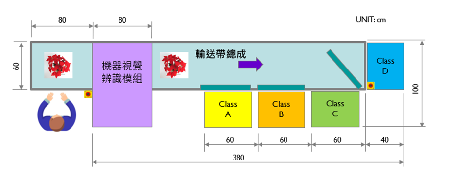

<div class="product-PLC">
    <div class="scrolled"></div>
    <div class="container pt-6 pb-15">
        <h2>智慧農業 – 系統整合</h2>
        <section class="text-center pb-15">
            
        </section>
        <h2>戰情室 – 養殖解決方案</h2>
        <section class="text-center pb-15">
            
        </section>
        <h2>自動化設備 產業</h2>
        <section class="text-center pb-15">
            
        </section>
        <h2>農業自動化 設備 – 盆花智慧分級系統</h2>
        <section class="text-center pb-15">
            
        </section>
    </div>
</div>
